연구 ▷ HST ▷ 예제2 위에서의 거리들 — 9종 비교와 파라메터 스윕
0. 개요
본 노트는 그래프 거리 9종을 두 개의 단순한 예제 위에서 동일한 분석 파이프라인으로 비교한다. 두 예제는 모두 hst.tex 의 Example 2 의 정점 집합 \(\mathcal V\) 와 신호 \(\bsy\) 를 공유하며, 가중치 행렬 \(\mathbf W\) 의 정의에서만 차이를 둔다.
- 예제 A — Gaussian kernel weighting (대칭, hst.tex Example 2 그대로).
- 예제 B — 단방향 순환행렬 (비대칭, 본 노트에서 추가한 변형).
각 예제에서 다음 다섯 단계를 동일하게 수행한다:
- 정확한 setup 명시 (정점·신호·가중치 정의),
- 9종 거리에 대한 단발 비교 — distance matrix 와 cMDS-3D 임베딩,
- Ring profile — 한 기준 정점으로부터의 거리 곡선 비교,
- 파라메터를 갖는 5종 거리에 대한 파라메터 스윕,
- 비대칭-정직 분석 — \(\rho_{\mathrm{asym}}\) 정량지표와 Sammon-style dual MDS 임베딩.
이 다섯 단계를 모든 예제에 동일하게 적용함으로써, 향후 예제가 추가·교체되더라도 비교 가능한 결과가 누적되도록 설계한다.
1. 거리 9종 — 카탈로그
상세 정의·이력·directed graph 에서의 거동은 공부 ▷ 그래프 도메인에서의 거리 — 고전부터 HST까지 를 참조한다. 본 노트는 다음 9종을 다룬다.
| Family | 거리 | 정의 | 파라메터 |
|---|---|---|---|
| Path | Shortest path² | \(\bigl(\min_\pi \sum_{e\in\pi} w_e^{-1}\bigr)^2\) | — |
| Walk | Diffusion | \(\sum_k(P^t_{ik}-P^t_{jk})^2/\pi_k\) (Coifman–Lafon) | \(t\), \(\pi\)-weighted/unweighted |
| Walk | Heat kernel | \(\bigl\| (e^{-tL})_{i,\cdot} - (e^{-tL})_{j,\cdot} \bigr\|_2^2\) | \(t\) |
| Walk | PPR | \(\| \mathbf p_i - \mathbf p_j \|_2^2\), \(\;\mathbf p_i = \alpha\mathbf e_i + (1-\alpha)P^\top \mathbf p_i\) | \(\alpha\) |
| Algebraic | Resistance | \(L^\dagger_{ii} + L^\dagger_{jj} - 2L^\dagger_{ij}\) | — |
| Algebraic | Biharmonic | \(\sum_k\bigl(\psi_k(i)-\psi_k(j)\bigr)^2/\lambda_k^2\) | — |
| Algebraic | Spectral embedding | \(\sum_{k=1}^K\bigl(\psi_k(i)-\psi_k(j)\bigr)^2\) | \(K\) |
| Signal | Euclidean | \(\bigl(y(v_i) - y(v_j)\bigr)^2\) | — |
| Signal+Graph | HST | \(\overline{\mathrm{SD}}^2(\tau) = \tau^{-1}\sum_{\ell=1}^\tau \bigl(h(v_i,\ell)-h(v_j,\ell)\bigr)^2\) | \(\tau, b\) |
여기서 \(P = D^{-1}\mathbf W\) 는 row-stochastic 전이행렬, \(\pi\) 는 \(P\) 의 stationary distribution, \(L = D - \mathbf W\) 는 (combinatorial) 그래프 라플라시안, \(L^\dagger\) 는 그 Moore–Penrose 의사역, \((\lambda_k, \psi_k)\) 는 대칭화 라플라시안 \(L_s = (L+L^\top)/2\) 의 고유쌍이다. 비대칭 \(\mathbf W\) 에 대해서는 본 노트 §3.5 / §4.5 에서 이 정의들의 한계를 별도로 검토한다.
2. 분석 파이프라인의 공통 도구
2.1 cMDS-3D 임베딩
squared symmetric distance matrix \(\mathbf D \in \mathbb R^{n \times n}\) 에 대해 double-centering \(\mathbf B = -\tfrac12 \mathbf J \mathbf D \mathbf J\) (\(\mathbf J = \mathbf I - n^{-1}\mathbf 1\mathbf 1^\top\)) 의 상위 3 고유쌍 \((\mu_k, \mathbf v_k)_{k=1,2,3}\) 으로 임베딩 좌표를 \(\mathbf x_i = \bigl(\sqrt{\mu_k}\, v_k(i)\bigr)_{k=1,2,3}\) 로 정의한다.
2.2 Ring profile
ring 형 그래프의 회전 구조를 활용해, 기준 정점 \(v_1\) 으로부터의 거리 \(D[1, j]\) 를 정점 인덱스 \(j\) 의 함수로 그린 후 각 거리마다 \(\min\)–\(\max\) 정규화하여 형상만 비교한다.
2.3 비대칭-정직 분석 (asymm-honest)
cMDS 는 squared symmetric 행렬을 요구하므로, 비대칭 그래프 위에서 기존 분석은 알고리즘적 대칭화 (directed=False, \(L_s\) 강제, \((D + D^\top)/2\) 평균 등) 를 통해 사실상 directed 정보를 소거한다. 이를 보완하기 위해 다음 네 가지 도구를 추가로 사용한다.
(i) 비대칭 정량지표 \(\rho_{\mathrm{asym}}\). \[\rho_{\mathrm{asym}}(\mathbf D) \;=\; \frac{\| \mathbf D - \mathbf D^\top \|_F}{\| \mathbf D + \mathbf D^\top \|_F}.\] \(\rho_{\mathrm{asym}} = 0\) 은 완전 대칭, \(\rho_{\mathrm{asym}} \to 1\) 은 강한 비대칭을 의미한다.
(ii) \(\mathbf D\) heatmap. 비대칭이라면 비대칭 그대로 표현한다.
(iii) \(\mathbf D - \mathbf D^\top\) heatmap. 0 을 중심으로 한 발산 colormap 으로 비대칭 성분을 직접 시각화한다.
(iv) \(D[i,j]\) vs \(D[j,i]\) scatter. 모든 정점 쌍이 \(y = x\) 선 위에 위치하면 대칭, 벗어나면 directional 정보가 보존됨을 의미한다.
(v) Sammon-style 비대칭 dual MDS. 각 정점 \(v_i\) 를 source 좌표 \(\mathbf p_i \in \mathbb R^k\) 와 sink 좌표 \(\mathbf q_i \in \mathbb R^k\) 두 벡터로 임베딩한다. stress 함수 \[\mathcal S(\mathbf P, \mathbf Q) \;=\; \sum_{i \neq j} \Bigl(\sqrt{D[i,j]} - \| \mathbf p_i - \mathbf q_j \|_2 \Bigr)^2\] 를 L-BFGS-B 로 최소화한다. \(\mathbf D\) 가 대칭이면 최소점에서 \(\mathbf p_i = \mathbf q_i\) 가 성립하여 통상적 cMDS 와 동치이다. 비대칭이면 source 와 sink 좌표가 어긋나며, 그 어긋남이 directional 정보의 시각적 흔적으로 남는다.
소스 코드: 260428_예제2_거리비교_asymm정직판.py.
3. 예제 A — Gaussian ring (대칭)
3.1 Setup
hst.tex Example 2 의 정의를 그대로 사용한다.
정점 집합 (\(n = 60\)): \[\mathcal V \;=\; \Bigl\{\, v_i = \bigl(\cos\tfrac{2\pi i}{n},\, \sin\tfrac{2\pi i}{n}\bigr) \;:\; i = 1, \ldots, n \,\Bigr\}.\]
엣지 집합: 자기루프를 제외한 완전 그래프, \(E_{ij} = \mathbb 1[i \neq j]\).
가중치 행렬: Gaussian kernel weighting, \[W_{ij} \;=\; \begin{cases} \displaystyle\exp\!\Bigl(-\frac{\| v_i - v_j \|_2^2}{2\theta^2}\Bigr) & i \neq j, \\[4pt] 0 & i = j, \end{cases} \qquad 2\theta^2 = 0.35.\] 이로부터 \(\mathbf W^\top = \mathbf W\) (대칭).
신호: \[y(v_i) \;=\; \begin{cases} +3 + \epsilon_i & i = 1, \ldots, n/2, \\ -3 + \epsilon_i & i = n/2 + 1, \ldots, n, \end{cases} \qquad \epsilon_i \stackrel{\text{iid}}{\sim} \mathcal N(0, 0.1^2).\]
소스: 260424_예제2재현.py.
3.2 9종 거리 — 단발 비교
각 거리에 표준 파라메터 (diffusion \(t = 4\), heat \(t = 2\), PPR \(\alpha = 0.15\), spectral \(K = 5\), HST \(\tau = 5 \cdot 10^7\)) 를 부여하여 distance matrix heatmap 과 cMDS-3D 임베딩을 한 그림에 정리한다. HST 의 \(\tau\) 는 transient noise 를 충분히 압축하기 위해 \(5 \cdot 10^7\) 까지 키웠다 (재생성 스크립트; precomputed \(\overline{\mathrm{SD}}^2\) 캐시는 results/numeric/260428_HST_gauss_tau50M/ 에 있음).
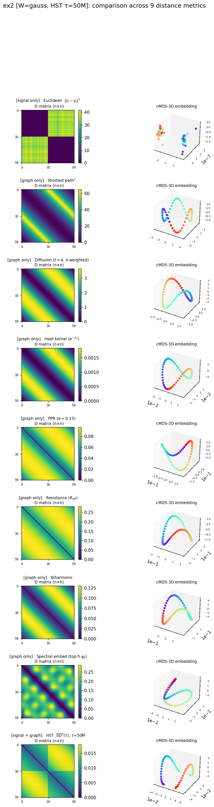
관찰.
- Signal-only (Euclidean): 두 cluster 가 1차원으로 분리.
- Graph-only 7종 (SP, Diffusion, Heat, PPR, Resistance, Biharmonic, Spectral): 모두 거의 동일한 ring 임베딩으로 수렴. 정규 ring 의 라플라시안 spectrum 이 단순한 형태로 분포하므로 spectral filter \(f(\lambda)\) 의 형태에 거의 무관한 결과를 얻는다 (§5.1 통합식 참조).
- Signal+Graph (HST): cluster 두 개가 ring substructure 를 보유한 cylinder 형태. 이 cylinder 의 unique 성에 대한 별도 검증은 예제2 재검토 의 Procrustes 분석 참조.
3.3 Ring profile
기준 정점 \(v_1\) 으로부터의 거리 \(D[1, j]\) 를 정규화하여 \(j\) 에 대해 그린 그림.
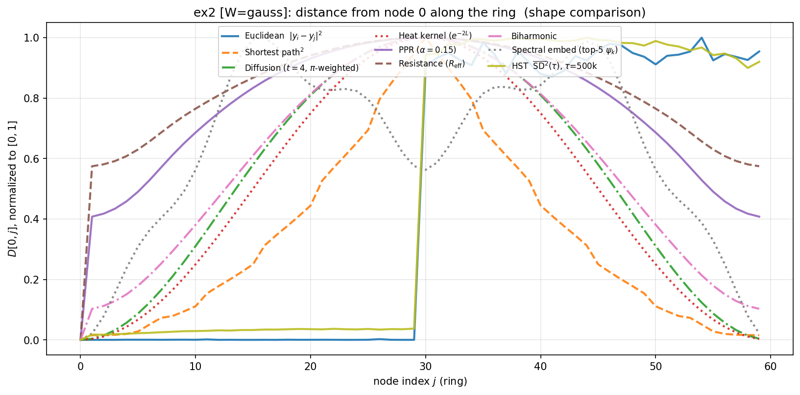
graph-only 7종이 거의 한 곡선 위에 겹친다. Euclidean 은 step 함수, HST 는 Euclidean 과 graph-only 사이의 부드러운 곡선이다.
3.4 파라메터 스윕
각 파라메터 거리에 대해 (열 = 파라메터 값) × (행 = distance matrix / cMDS-3D / ring profile) 의 그림으로 형상 변화를 추적한다.
3.4.1 Diffusion — \(t \in \{1, 2, 4, 8, 16, 32, 64\}\), \(\pi\)-weighted vs unweighted
\[d_t^2(v_i, v_j) \;=\; \sum_{k=1}^n \frac{(P^t_{ik} - P^t_{jk})^2}{\pi_k} \quad (\pi\text{-weighted}), \qquad \sum_{k=1}^n (P^t_{ik} - P^t_{jk})^2 \quad (\text{unweighted}).\]
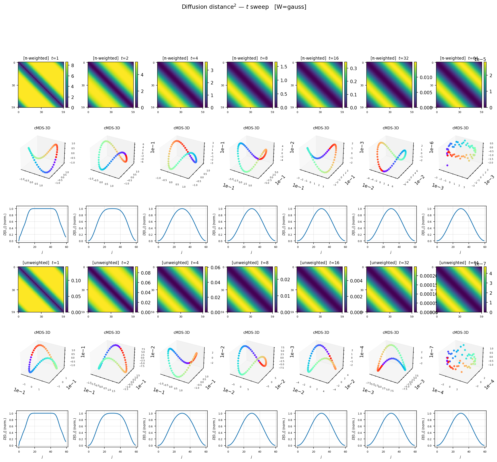
\(t \to 0\): 국소 1-홉 정보만 (heatmap 의 대각 근방만 활성). \(t \to \infty\): \(P^t \to \mathbf 1 \pi^\top\), 모든 거리가 \(0\) 으로 붕괴. \(t \in [4, 16]\) 구간에서 cMDS 가 가장 깨끗한 ring 임베딩을 산출한다 (multi-scale sweet spot). 정규 ring 에서 \(\pi\) 가 거의 균일하므로 weighted 와 unweighted 의 시각적 차이는 미미하다.
3.4.2 Heat kernel — \(t \in \{0.1, 0.5, 1, 2, 4, 8, 16\}\)
\[d_t^2(v_i, v_j) \;=\; \bigl\| (e^{-t L})_{i,\cdot} - (e^{-t L})_{j,\cdot} \bigr\|_2^2.\]
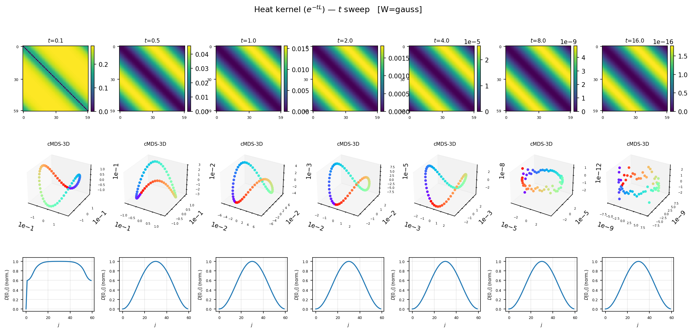
\(t \to 0\): \(e^{-tL} \approx \mathbf I\), 거리 \(\approx 0\). \(t\) 증가에 따라 고주파 성분이 감쇠하여 저주파 모드만 남고, ring 임베딩으로 수렴. \(t\) 가 매우 크면 stationary 로 다시 붕괴.
3.4.3 PPR — \(\alpha \in \{0.05, 0.1, 0.2, 0.4, 0.6, 0.8, 0.95\}\)
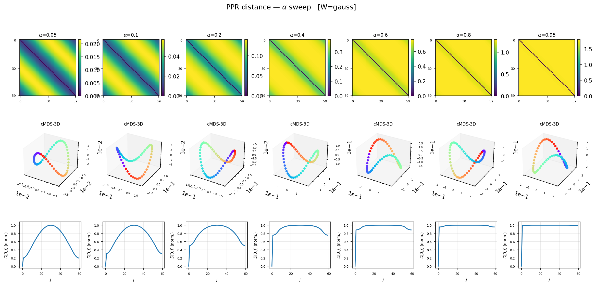
\(\alpha \to 0\): \(\mathbf p_i \to \pi\), 한 점 collapse. \(\alpha \to 1\): \(\mathbf p_i \to \mathbf e_i\), 모든 쌍 거리 \(= \sqrt 2\) (heatmap 균일). 중간값 (\(\alpha \approx 0.2 \sim 0.4\)) 에서 ring 구조가 가장 잘 펴진다.
3.4.4 Spectral embedding — \(K \in \{2, 3, 5, 8, 12, 20, 30\}\)
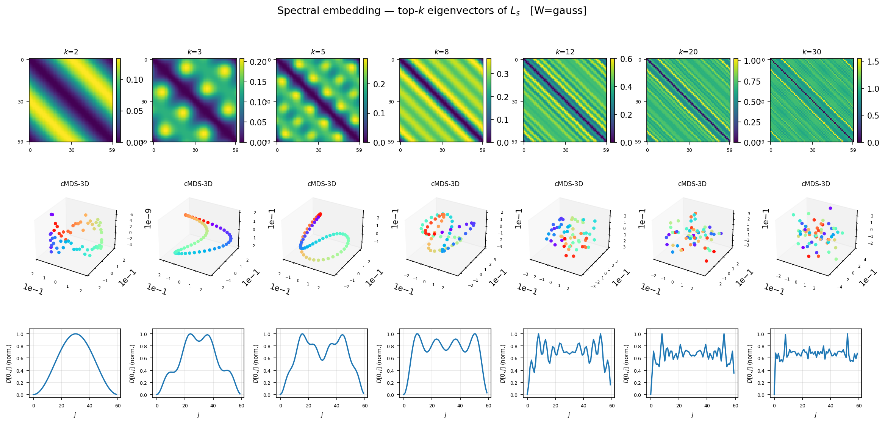
\(K = 2\): 첫 두 nontrivial 고유벡터 \((\psi_1, \psi_2)\) 가 ring 의 \((\cos, \sin)\) 좌표를 정확히 복원. \(K\) 가 증가하면 고차 harmonic 이 더해져 표면적으로 더 풍부해 보이나, 본질적인 형상 변화는 작다. \(K \geq \mathrm{rank}(L_s)\) 에서 Parseval 항등식에 의해 Euclidean 거리에 점근.
3.4.5 HST — \(b \in \{0.01, 0.05, 0.1, 0.3, 0.5, 1, 2\}\), \(\tau = 3 \cdot 10^4\) 고정
\(b\) 는 block 임계 — flow 가 height 차이 \(\theta = b/\sqrt 2\) 를 초과하는 이웃으로 이동할 확률 가중치.
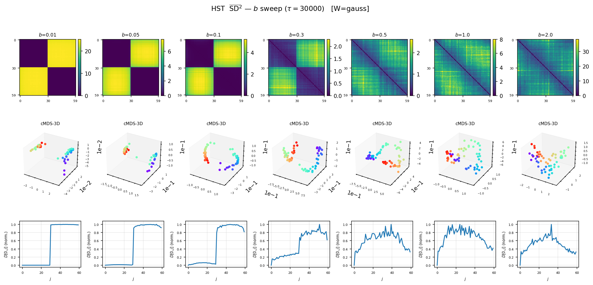
\(b \to 0\): block 메커니즘 무력화 → 자유 random walk → \(\overline{\mathrm{SD}}^2\) 가 commute time 과 같은 거동. \(b\) 중간값: cylinder 형태 (signal split + ring residual). \(b \gg 1\): block 이 거의 모든 flow 를 차단 → snowy ground 가 초기 신호를 보존 → \(\overline{\mathrm{SD}}^2\) 가 Euclidean 거리의 상수배에 점근.
3.5 비대칭-정직 분석 (sanity check)
\(\mathbf W^\top = \mathbf W\) 이므로 비파라메터 5종 + 파라메터 4종의 모든 파라메터 값 에서 \(\rho_{\mathrm{asym}} = 0\) 이 성립해야 한다. 거리를 두 부류로 나누어 검증:
- (native) — 정의가 비대칭 \(\mathbf W\) 도 well-defined: SP² (
directed=True), Hitting time, Diffusion, Heat, PPR. - (symmetric by construction) — 정의 자체가 \(L_s\) 혹은 \(\bsy\) 만을 사용: Resistance, Biharmonic, Spectral embedding, Euclidean.
(HST 의 거동은 따로 정리되어 있으므로 본 분석에서 제외 — 예제2 재검토, 수렴 증명 등 참조.)
3.5.1 비파라메터 5종
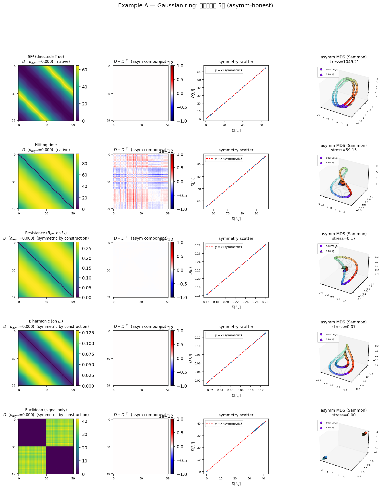
| 거리 | \(\rho_{\mathrm{asym}}\) | 분류 |
|---|---|---|
Shortest path² (directed=True) |
0.0000 | native |
| Hitting time | 0.0000 | native |
| Resistance (\(R_{\mathrm{eff}}\), on \(L_s\)) | 0.0000 | symmetric by construction |
| Biharmonic (on \(L_s\)) | 0.0000 | symmetric by construction |
| Euclidean (signal only) | 0.0000 | symmetric by construction |
3.5.2 Diffusion — \(t \in \{1, 2, 4, 8, 16, 32, 64\}\) (\(\pi\)-weighted)
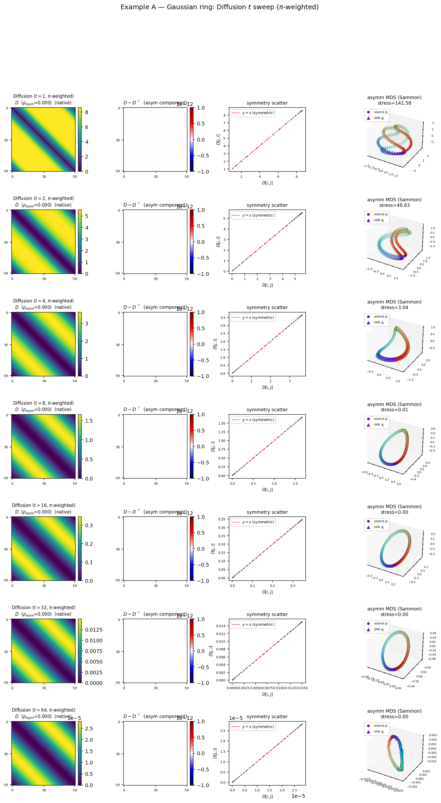
모든 \(t\) 에서 \(\rho_{\mathrm{asym}} = 0.0000\).
3.5.3 Heat kernel — \(t \in \{0.1, 0.5, 1, 2, 4, 8, 16\}\)
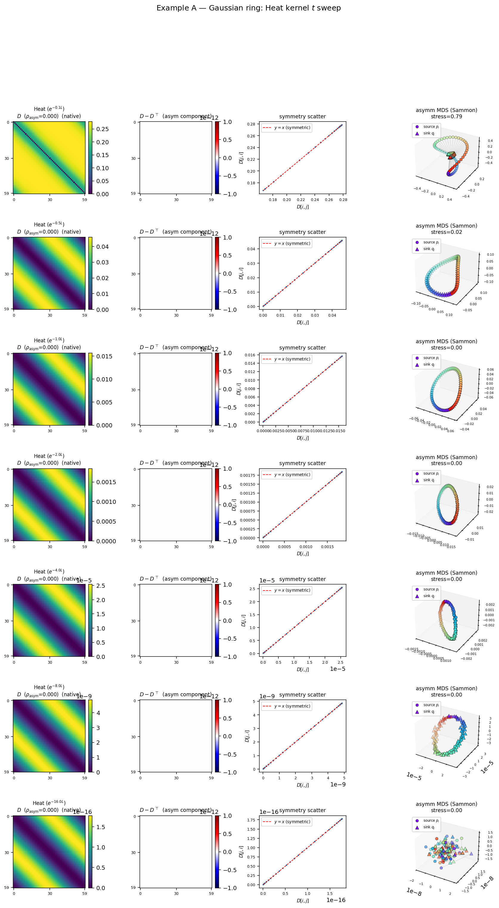
모든 \(t\) 에서 \(\rho_{\mathrm{asym}} = 0.0000\).
3.5.4 PPR — \(\alpha \in \{0.05, 0.1, 0.2, 0.4, 0.6, 0.8, 0.95\}\)
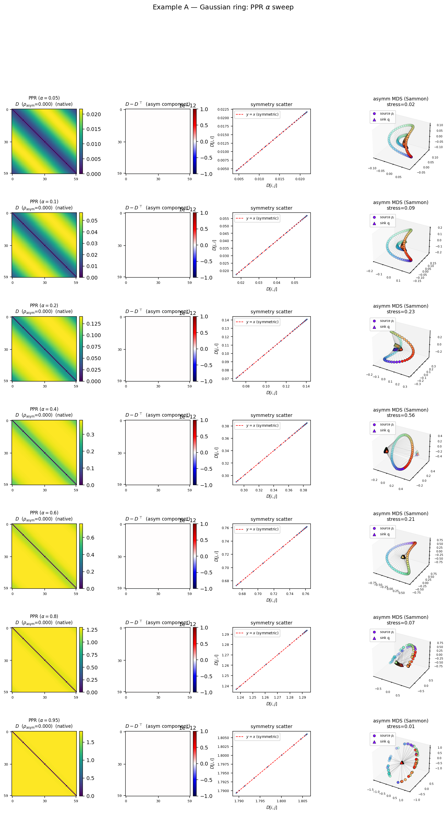
모든 \(\alpha\) 에서 \(\rho_{\mathrm{asym}} = 0.0000\).
3.5.5 Spectral embedding — \(K \in \{2, 3, 5, 8, 12, 20, 30\}\)
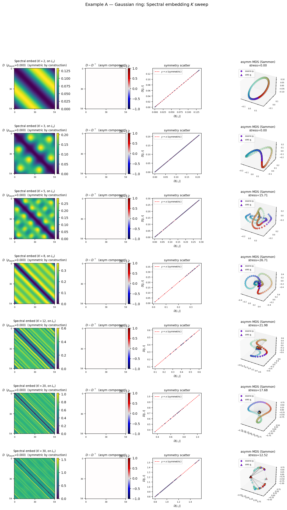
모든 \(K\) 에서 \(\rho_{\mathrm{asym}} = 0.0000\).
3.5.6 정리
모든 거리·모든 파라메터 값에서 \(\rho_{\mathrm{asym}}\) 이 정확히 \(0\). Sammon dual MDS 의 source/sink 좌표가 동일 위치로 수렴하여 통상적 cMDS-3D 와 동치임을 확인. 도구 자체의 유효성이 검증된다.
4. 예제 B — Directed cycle (비대칭)
4.1 Setup
§3.1 의 정점 집합 \(\mathcal V\) 와 신호 \(\bsy\) 를 그대로 유지하고, 가중치 행렬만 단방향 순환행렬로 교체한다.
엣지·가중치 행렬: \[E_{ij} \;=\; W_{ij} \;=\; \begin{cases} 1 & j = (i \bmod n) + 1, \\ 0 & \text{otherwise}. \end{cases}\] 즉 각 정점 \(v_i\) 는 후속 정점 \(v_{(i \bmod n) + 1}\) 로의 단 하나의 나가는 엣지만을 가지며, \(\mathbf W^\top \neq \mathbf W\).
이는 hst.tex Example 2 에는 없는 변형으로, 비대칭성이 거리 행렬에 어떻게 (또는 어떻게 못 하게) 전달되는지 검토하기 위해 도입한다.
4.2 9종 거리 — 단발 비교
§3.2 와 동일한 표준 파라메터로 단발 비교를 수행한다.
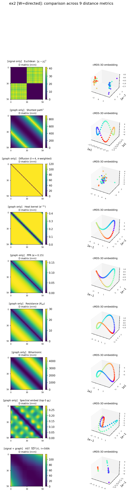
표면적으로는 §3.2 와 유사한 패턴 — graph-only 거리들의 임베딩이 비슷한 ring 형태로 수렴하는 것처럼 보인다. 그러나 이 결과를 액면 그대로 받기 전에 다음 두 사실을 짚어야 한다:
260425_예제2_거리비교.py가 directed cycle 위에서 사용한 알고리즘적 대칭화.- Shortest path:
scipy.sparse.csgraph.shortest_path(..., directed=False)호출 → 양방향 최단경로의 최솟값 사용 (directed 정보 소거). - Resistance / Biharmonic / Spectral embedding: \(L_s = (L + L^\top)/2\) 강제 → \(\mathbf W\) 의 단방향 정보 소거.
- Shortest path:
- cMDS 자체의 한계. cMDS 는 squared symmetric 행렬을 요구한다. 비대칭 거리에 적용하려면 어떤 식으로든 대칭화가 필요하며, 이 단계에서 directional 정보가 추가로 소실된다.
따라서 위 그림은 directed cycle 의 9종 거리 라기보다는, 각 거리를 무리하게 symmetric 화한 결과 로 해석해야 정확하다. 이 한계를 §4.5 의 비대칭-정직 분석으로 정량화한다.
4.3 Ring profile
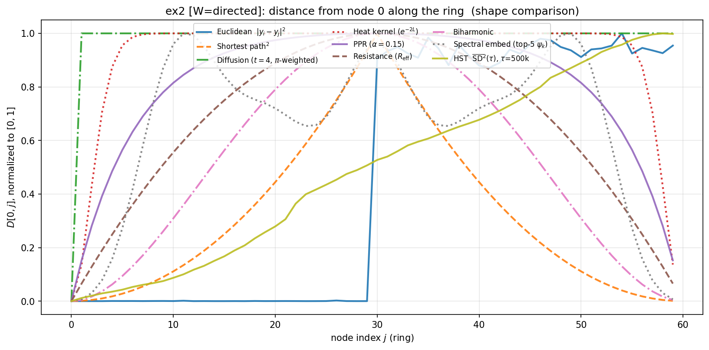
§3.3 과 비교했을 때 곡선 형상의 분포가 다르나 (특히 Euclidean·HST 와 graph-only 사이의 분리), 위 §4.2 에서 짚은 알고리즘적 대칭화 효과가 ring profile 에도 동일하게 작용함에 유의한다.
4.4 파라메터 스윕
4.4.1 Diffusion
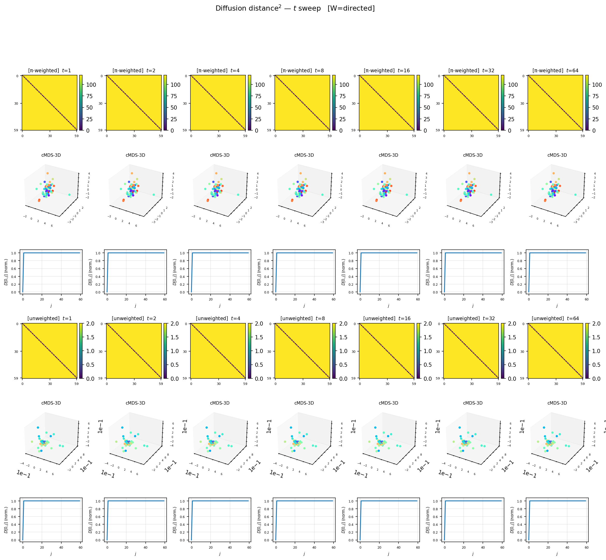
순환행렬 \(\mathbf W\) 에 대해 \(P = D^{-1}\mathbf W\) 도 순환 permutation 이며 \(P^t\) 역시 permutation. 이로부터 \(\sum_k (P^t_{ik} - P^t_{jk})^2 = 2\) (\(i \neq j\)) 가 성립하여, \(\pi\)-weighted diffusion distance 가 모든 쌍에서 \(2/\pi_k = 2n\) 으로 상수 가 된다 (degenerate). cMDS-3D 임베딩이 모든 정점을 한 점 (또는 동일한 거리의 simplex) 으로 모은다.
4.4.2 Heat kernel
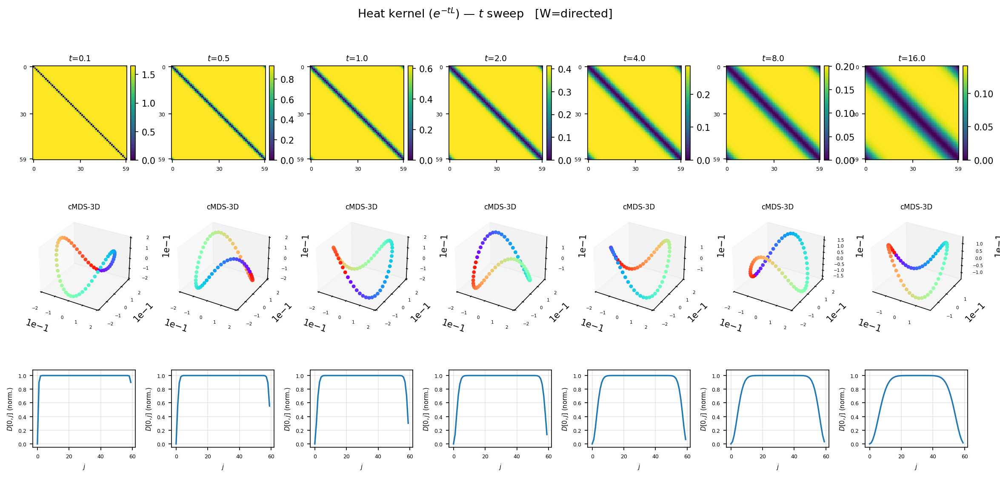
\(L = \mathbf I - \mathbf W\) 가 비대칭. \(e^{-tL}\) 의 행 \(i\) 는 \(i\) 위치에서 한 방향으로 Poisson 분포를 따라 펴진다. 행 간 L2 거리는 두 분포의 shift magnitude 에만 의존하므로 회전 대칭 → output 자체는 symmetric. 이는 §4.5 의 \(\rho_{\mathrm{asym}} = 0\) 결과와 일치.
4.4.3 PPR
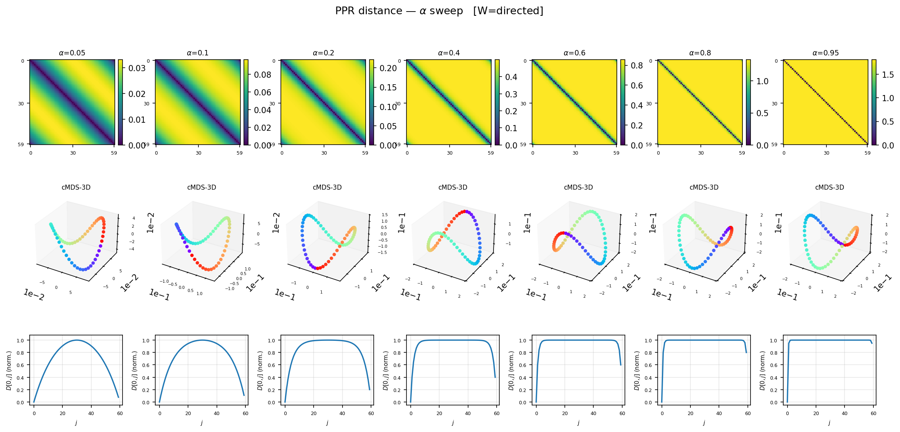
\(\mathbf p_i = \alpha \mathbf e_i + (1-\alpha) P^\top \mathbf p_i\) 로부터 \(\mathbf p_i\) 가 \(i\) 위치에서 한 방향으로 geometric 감쇠. Heat kernel 과 같은 이유로 거리 자체는 회전 대칭 (symmetric output).
4.4.4 Spectral embedding
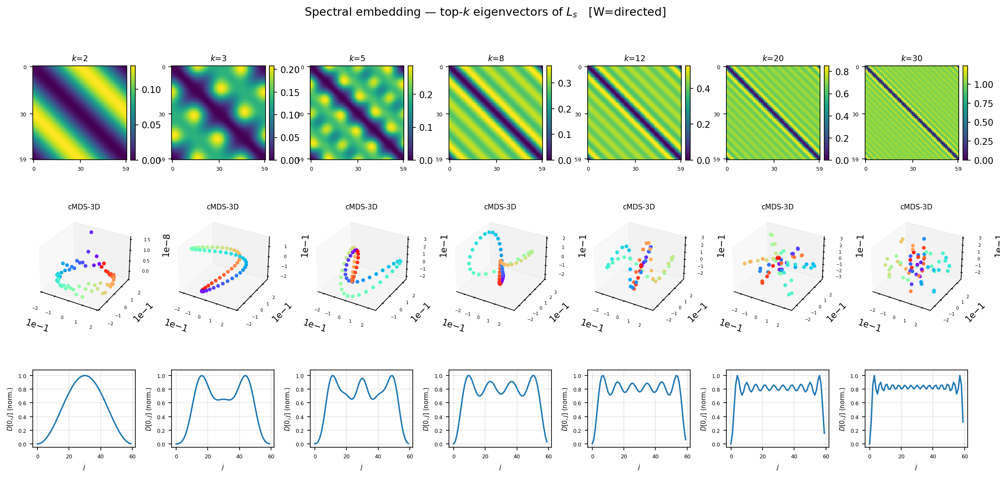
대칭화 라플라시안 \(L_s\) 가 본질적으로 절반 가중치 undirected cycle 의 라플라시안에 해당하므로, 결과적으로 §3.4.4 와 동일한 형상이 나타난다 (directed 정보 완전 소실).
4.4.5 HST
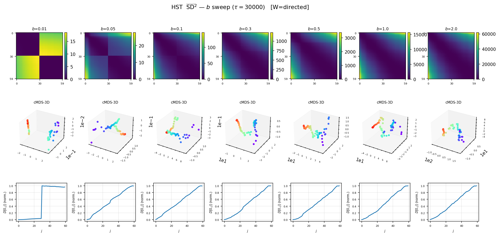
HST 의 walker dynamics 는 \(\mathbf W\) 를 대칭화하지 않고 그대로 받아들이므로, \(b\) 중간값에서 비대칭으로 비틀린 cylinder 형태가 나타나는 등 directional 정보의 흔적이 일부 보존된다.
4.5 비대칭-정직 분석
§3.5 와 동일한 분류·동일한 파라메터 구성으로 비대칭-정직 분석을 수행한다. 핵심 검증 항목은 파라메터 거리들의 결과가 어떤 파라메터 값에서도 \(\rho_{\mathrm{asym}} = 0\) 으로 수렴하는지 — 즉 directed cycle 위에서의 symmetric output trap 이 파라메터 의존이 아닌 구조적 한계인지 — 이다.
4.5.1 비파라메터 5종
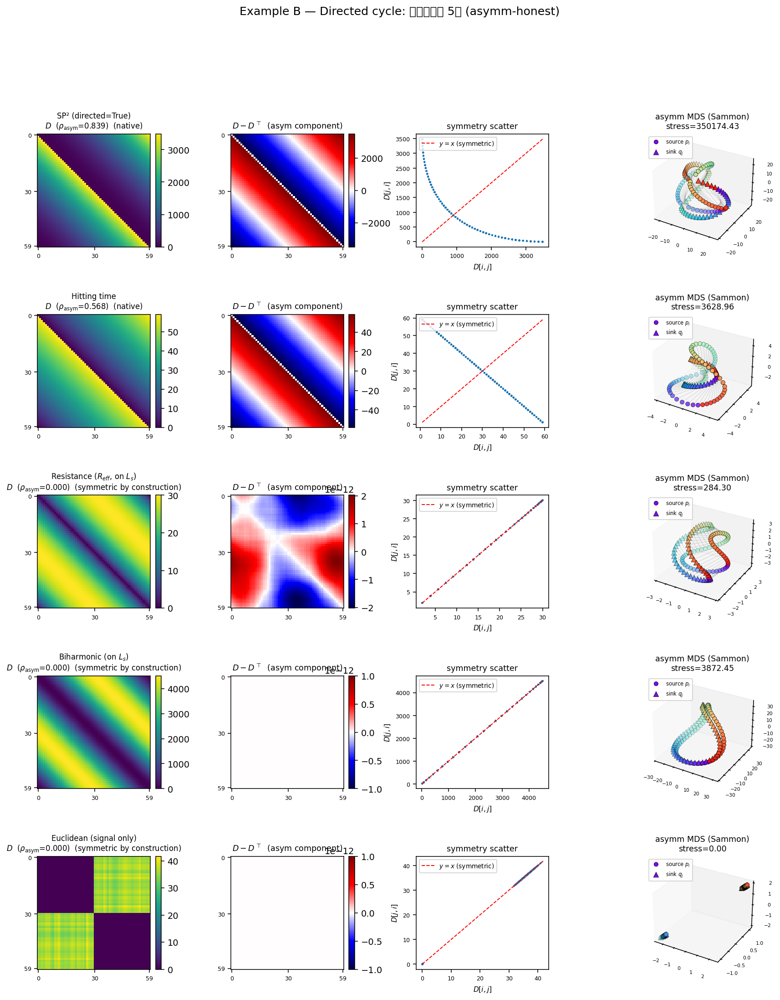
| 거리 | \(\rho_{\mathrm{asym}}\) | 분류 | 해석 |
|---|---|---|---|
Shortest path² (directed=True) |
0.8389 | native | \(D[i, j] = \bigl((j - i) \bmod n\bigr)^2\). 명확한 비대칭. heatmap 사선, scatter 가 \(y = x\) 에서 좌우로 갈라짐, Sammon dual MDS 에서 source ring 과 sink ring 이 회전 offset 으로 분리. |
| Hitting time | 0.5676 | native | \(\mathbb E_{v_i}[\tau_{v_j}] = (j - i) \bmod n\). SP 와 동일한 비대칭 구조. |
| Resistance (\(R_{\mathrm{eff}}\), on \(L_s\)) | 0.0000 | symmetric by construction | 정의상 \(L_s\) 사용 — 비대칭 \(\mathbf W\) 정보 차단. |
| Biharmonic (on \(L_s\)) | 0.0000 | symmetric by construction | 같음. |
| Euclidean (signal only) | 0.0000 | symmetric by construction | 신호만 사용, 그래프 정보 미반영. |
4.5.2 Diffusion — \(t \in \{1, 2, 4, 8, 16, 32, 64\}\) (\(\pi\)-weighted)
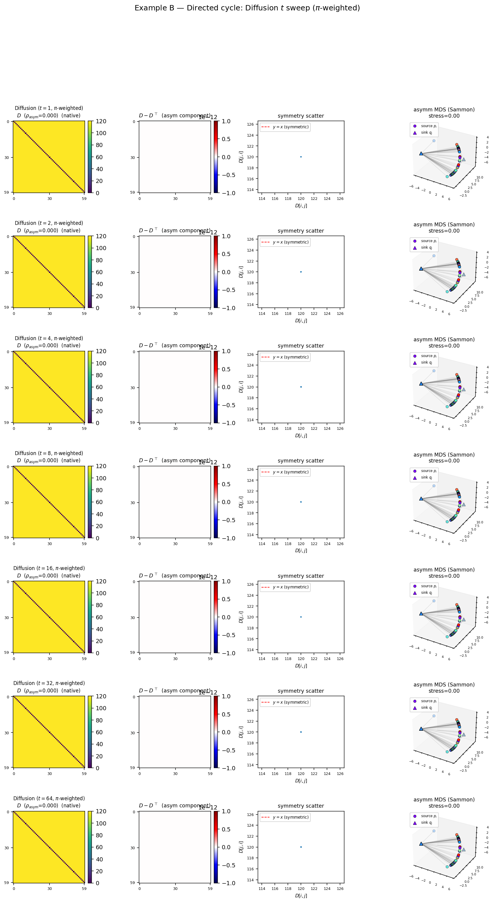
모든 \(t\) 에서 \(\rho_{\mathrm{asym}} = 0.0000\). \(P\) 가 permutation 행렬이므로 \(P^t\) 도 permutation 이고, \(D[i, j] = \sum_k(P^t_{ik} - P^t_{jk})^2 / \pi_k\) 가 모든 \(i \neq j\) 쌍에서 상수로 떨어진다 (degenerate). \(t\) 와 무관한 자명한 대칭.
4.5.3 Heat kernel — \(t \in \{0.1, 0.5, 1, 2, 4, 8, 16\}\)
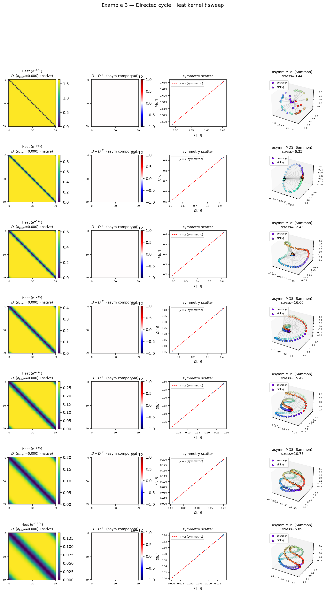
모든 \(t\) 에서 \(\rho_{\mathrm{asym}} = 0.0000\). \(e^{-tL}\) 의 행 \(i\) 가 한 방향 Poisson 분포로 펴지지만, 두 행 사이 L2 거리가 shift magnitude 의 함수로만 떨어져 회전 대칭이 강제됨.
4.5.4 PPR — \(\alpha \in \{0.05, 0.1, 0.2, 0.4, 0.6, 0.8, 0.95\}\)
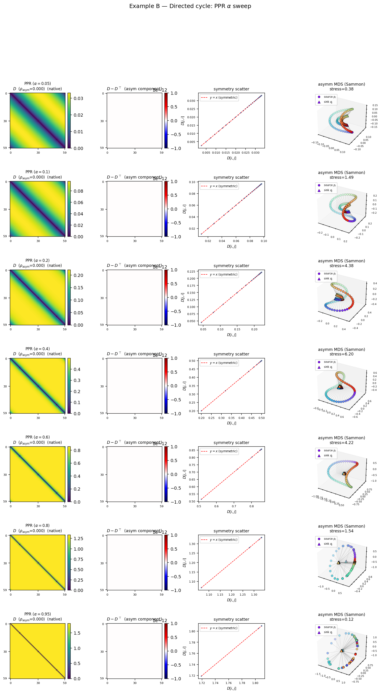
모든 \(\alpha\) 에서 \(\rho_{\mathrm{asym}} = 0.0000\). \(\mathbf p_i = \alpha\mathbf e_i + (1-\alpha) P^\top \mathbf p_i\) 가 한 방향 geometric decay 를 만들지만, 분포 사이 L2 거리는 같은 이유로 회전 대칭.
4.5.5 Spectral embedding — \(K \in \{2, 3, 5, 8, 12, 20, 30\}\)
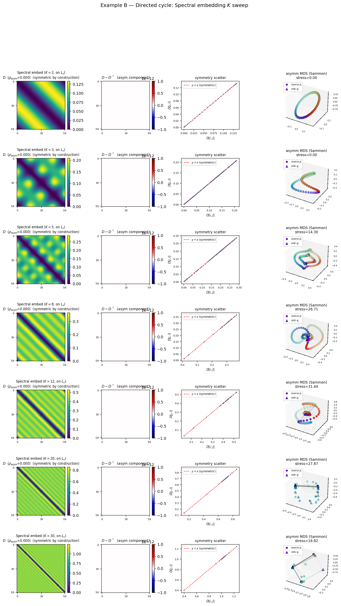
모든 \(K\) 에서 \(\rho_{\mathrm{asym}} = 0.0000\). 정의상 \(L_s\) 의 고유벡터를 사용하므로 자명한 대칭.
4.5.6 정리
비파라메터 5종 + 파라메터 4종 × 7개 파라메터 값 = 총 33개 측정에서, \(\rho_{\mathrm{asym}} > 0\) 을 보이는 거리는 오직 Shortest path² (directed=True) 와 Hitting time 둘뿐이다. 나머지 거리들이 directed cycle 위에서 모두 symmetric output 으로 떨어지는 것은 파라메터 선택에 무관한 구조적 한계 이며, 다음 두 메커니즘으로 분해된다:
- 회전 대칭성 trap (Diffusion / Heat / PPR) — directed cycle 의 회전 자기동형이 row-L2 형식의 거리를 두 정점 사이 shift magnitude 의 함수로만 환원시킨다. 입력은 비대칭이나 출력은 대칭.
- \(L_s\) 강제 대칭화 (Resistance / Biharmonic / Spectral) — 정의 자체가 대칭 라플라시안을 요구하므로, 비대칭 \(\mathbf W\) 의 정보가 거리 정의 단계에서 이미 소거.
따라서 §4.2–§4.4 의 모든 그림에서 directed cycle 결과가 §3.2–§3.4 의 Gaussian ring 결과와 비슷하게 보였던 이유는 (i)·(ii) 와 알고리즘적 대칭화 (SP directed=False 등) 가 결합한 것이며, 어떤 파라메터 조정으로도 이 한계는 우회되지 않는다.
directed cycle 위에서 directional 정보를 거리 행렬 수준까지 보존하는 것은 Shortest path² (directed=True) 와 Hitting time 뿐이다. 본 sweep 으로 strong robustness 가 확보된 결론이다.
5. 정리
본 노트의 결과를 거리 분류 관점에서 다음과 같이 갱신할 수 있다.
(A) Spectral filter family (graph-only). Diffusion / Heat / PPR / Resistance / Biharmonic / Spectral embedding 은 spectral filter \(f(\lambda)\) 의 차이로 통합된다 (§5.1). 정규 ring 위에서는 \(f\) 의 형태에 거의 무관하게 비슷한 ring 임베딩을 산출한다. 파라메터 (\(t, \alpha, K\)) 는 분해능의 다이얼이다.
(B) Path-only family. Shortest path. 매개변수가 없으며, 한 경로에 의존하므로 노이즈에 민감하나 directional 정보를 가장 직접적으로 보존한다 (§4.5 결과 참조).
(C) Signal-aware family. Euclidean (signal only) 과 HST (signal+graph). HST 는 \(b\) 와 \(\tau\) 를 통해 (B)–(A)–(C) 사이의 매끄러운 가족을 형성한다.
(D) Directed-aware family — 본 노트의 새 분류. §4.5 의 sweep 결과 (33개 측정) 에서 비대칭 입력으로부터 비대칭 출력 까지 보존하는 거리는 Shortest path² (directed=True) 와 Hitting time 둘뿐이다. 나머지 native 분류 거리 (Diffusion / Heat / PPR) 는 회전 대칭 그래프에서 row-L2 형식이 shift-magnitude 함수로 환원되는 trap 에 빠지며, \(L_s\) 기반 거리 (Resistance / Biharmonic / Spectral) 는 정의 자체에서 비대칭이 소거된다.
ex2 setting 이 HST 의 고유 가치를 충분히 보이지 못하는 이유는 예제2 재검토 에 정리되어 있다. 본 노트의 파라메터 스윕도 같은 방향의 결론을 보충 — \(b\) 의 어떤 값에서도 cMDS 임베딩이 graph-only 또는 Euclidean 어느 한쪽으로 수렴하며, 진정 새로운 형태가 나타나는 regime 은 좁다.
6. 다음
- 같은 분석 파이프라인을 예제 6 (parity cycle) / 예제 7 (twin rings) / 예제 8 (directed cycle) 에 동일하게 적용. 이 노트의 5단계 구조를 그대로 사용.
- \(b \times \tau\) 2차원 sweep — convergence rate 까지 동시에 조망.
- 본 노트의 비대칭-정직 분석에 HST 를 별도 거리 정의로 추가 검토 (현재는 분석에서 제외). \(\overline{\mathrm{SD}}^2_{ij} = \tau^{-1}\sum_\ell (h_i(\ell) - h_j(\ell))^2\) 가 squared-norm 형태이므로 자명히 대칭 출력으로 떨어지지만, \(\mathbf h_i\) 의 dynamics 자체에는 비대칭 정보가 보존되어 있을 가능성. lag-aware stress, source/sink 분리 height 등의 변형 거리 후보가 있다.
- 더 비대칭적인 directed 그래프 (DAG, 비균등 cycle bias 등) 위에서 동일한 분석. directed cycle 은 회전 대칭이 너무 강해 walk-family 의 한계만 부각되고 진짜 차이 는 나타나지 않는다.
- 파라메터별 cMDS 임베딩 사이의 Procrustes / spectral entropy 정량화.